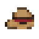
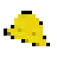
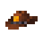
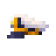
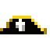
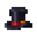
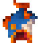
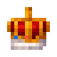

Um jogo de pesca que mora numa faixa transparente no rodapé da tela — ou atrás dos ícones da área de trabalho. Ele pesca sozinho enquanto você trabalha; clicar rende mais, mas ficar de olho nunca foi obrigatório.
Cinco lugares do Brasil, do Araguaia a Fernando de Noronha. Sessenta peixes pra colecionar, um bicho de estimação em cada mapa, e o clima virando sozinho por cima de tudo.
Esta página é o que está por trás dos números — se você só quer pescar, não precisa dela.
O peixe morde sozinho. Em média a cada 18 s, com variação de 0,7× a 1,3× — e mais rápido conforme sua vara, barco e pets.
Aparece um “!” na faixa. Você tem 2 segundos pra clicar.
Clicou dentro da janela: fisgada perfeita — o peixe vale +50% e não tem como escapar.
Não clicou: o jogo rola a chance de falha da sua isca. Se falhar o peixe some; se não, entra no barco normalmente.
Barco cheio, a pesca para. Venda tudo pela barra ou compre uma caixa maior.
De noite os peixes bons aparecem mais: raro +20%, épico +40% e lendário +60% no auge da madrugada (o efeito entra e sai junto com a transição). A Vara da Meia-Noite só funciona nesse período — e a Lua de Sangue só acontece nele.
A isca é a decisão mais importante do jogo: ela muda tudo ao mesmo tempo — a chance de peixe bom e a chance de perder o peixe. Isca melhor erra menos.
| Isca | Segura | Efeito extra | Comum | Incomum | Raro | Épico | Lendário | Celestial |
|---|---|---|---|---|---|---|---|---|
| 🍬 Jujuba (grátis) | 65% | — | 70,0% | 22,0% | 6,4% | 1,30% | 0,28% | 0,010% |
| Incomum | 78% | +20% de velocidade | 54,1% | 30,0% | 11,5% | 3,40% | 1,00% | 0,050% |
| Rara | 85% | +25% na venda | 37,1% | 32,1% | 20,1% | 8,02% | 2,71% | 0,150% |
| Épica | 92% | +35% na venda | 23,3% | 29,3% | 26,3% | 14,7% | 6,37% | 0,403% |
| Lendária | 96% | +20% na venda | 13,5% | 22,8% | 29,0% | 21,7% | 12,9% | 1,026% |
Cada mapa vende as suas próprias iscas, com nomes diferentes mas os mesmos cinco níveis. Isso é a chance de o peixe que mordeu chegar no barco. Sua vara e seus bichinhos ainda mexem nela, pros dois lados.
Isca boa se paga. Além de segurar mais, cada nível carrega um bônus próprio — velocidade no incomum, valor de venda nos três de cima. A exceção é a lendária: ela custa mais do que devolve. Não é isca de faturar — é a única que faz o celestial aparecer, e é assim que se fecha uma coleção.
O preço sobe de mapa em mapa. A mesma isca lendária custa 10.000 no Araguaia e 32.000 em Noronha — mais ou menos o triplo do primeiro ao último. É o que impede que o dinheiro do fim de jogo compre o começo de novo.
A cada 1 min o jogo sorteia; a chance de começar um evento é de 5% (o primeiro só depois de 30 s de jogo) — na média, um evento a cada 20 min. Ele avisa 10 s antes de cair e dura de 5 a 7 min, sorteados na hora. Todo evento tem uma mordida garantida — em algum ponto entre 20% e 80% da duração, vem um peixe daquela raridade, sem sorteio.
| Evento | Peso | Garante | Efeito | Onde |
|---|---|---|---|---|
| 🌧️ Chuva | 50 | Épico | Morde 30% mais rápido | qualquer |
| ✨ Águas Brilhantes | 16 | Épico | ×20 na chance de celestial | qualquer |
| ⛈️ Tempestade | 12 | Lendário | ×1,8 nas raridades altas · +10 p.p. de falha | qualquer |
| 🩸 Lua de Sangue | 8 | Lendário | ×5 na chance de lendário | só de noite |
| 🌊 Pororoca | 8 | Lendário | ×2,4 nas altas · +15 p.p. de falha | Araguaia e Rio Negro |
| 🫧 Virada das Águas | 8 | Lendário | ×2 nas altas · comuns caem pra ¼ | Furnas |
| 🌀 Furacão | 8 | Lendário | ×2,4 nas altas · +15 p.p. de falha | Costa de SC |
Peso é o quanto o evento pesa no sorteio, não uma porcentagem: a Chuva sozinha responde por mais da metade dos sorteios. Os eventos de mapa só entram no sorteio quando você está lá — e a Pororoca é a onda de maré subindo o rio, então vale nos dois rios e em mais lugar nenhum.
Todas custam 700 de base, mas cada vara comprada encarece a próxima em 50%. Só uma fica equipada.
| Vara | O que faz |
|---|---|
| 🎋 Bambu | A inicial, sem bônus. |
| 🎣 Fibra | +40% de velocidade, mas erra 25% mais. |
| 🪝 Aço | Segura 40% melhor. O que ela fisga, ela traz. |
| ✨ Carbono | +30% de qualidade (mais peixe raro), −20% de velocidade e erra 25% mais. |
| 💰 Mercador | Peixes valem +20% na venda. |
| 🌙 Meia-Noite | À noite: +40% de velocidade e +25% de qualidade. De dia é uma vara comum. |
O barco define quantos peixes cabem antes da pesca parar. Cada barco comprado encarece o próximo em 15%. Os dois últimos exigem troféu, e não só dinheiro: é o que obriga a fechar coleção antes de subir de frota.
| Barco | Espaços | Preço | Extra |
|---|---|---|---|
| 🛶 Canoa | 12 | — | a inicial |
| ⛵ Bote Reforçado | 24 | 2.000 | equilibrado |
| 💨 Lancha | 28 | 6.000 | +25% de velocidade |
| 🎣 Traineira | 48 | 14.000 | −15% de velocidade — pra deixar rodando |
| 🐟 Barco Fábrica | 36 | 55.000 | +25% na venda · exige 2 🏆 |
| 🔱 Traineira Oceânica | 36 | 90.000 | +20% de qualidade · exige 3 🏆 — o topo da frota em número |
| ☠️ Holandês Voador | 32 | 200.000 | +25% de velocidade · caro pra pouca coisa, e é a nau fantasma |
As caixas multiplicam a capacidade do barco e são cumulativas — cada uma exige a anterior: Isopor ×1,5 (25.000), Térmica ×2 (80.000), Porão ×2,5 (250.000 + 1 troféu), Câmara ×3 (600.000 + 2 troféus).
As duas últimas pedem troféu pelo mesmo motivo que o Barco Fábrica e a Oceânica pedem: capacidade é o que mais encurta o tempo de jogo, e a maior de todas não sai só de esperar moeda acumular. Troféu é coleção completa de um mapa, e toda coleção passa pelo peixe celestial — ou seja, pela isca cara.
Cada mapa tem um bicho. Ele aparece sozinho, com 0,1% de chance por peixe pescado. Você vai pescar bastante antes de ver o primeiro. Dá pra manter 3 ativos ao mesmo tempo, e os bônus somam.
| Pet | Mapa | Bônus |
|---|---|---|
| 🐊 Jacaré | Rio Araguaia | Segura 8% melhor o que morde |
| 🦦 Ariranha | Rio Negro | +6% no valor de venda |
| 🦢 Tuiuiú | Lago de Furnas | +7% de qualidade |
| 🐬 Boto | Costa de Santa Catarina | −10% no tempo entre mordidas |
| 🐢 Tartaruga | Fernando de Noronha | +8% de qualidade nas raridades altas |
Você começa no Araguaia. Cada mapa novo se abre pagando — ou de graça, se você tiver o troféu do anterior. O troféu vem de completar a coleção do lugar: os 12 peixes, pelo menos um de cada.
A coluna Celestial é o que mudou o jogo inteiro: o peixe mais raro de cada mapa fica progressivamente mais difícil de tirar. No Araguaia ele sai na chance cheia; em Noronha, com um décimo dela. Como o troféu exige a coleção completa, e a coleção inclui o celestial, é isso que faz o fim de jogo existir — e é onde o dinheiro grande é queimado, em isca cara.
| Mapa | UF | Custo | Celestial | Evento próprio |
|---|---|---|---|---|
| Rio Araguaia | TO/GO | inicial | ×1 | 🌊 Pororoca |
| Rio Negro | AM | 55.000 | ×0,60 | — |
| Lago de Furnas | MG | 200.000 | ×0,35 | 🫧 Virada das Águas |
| Costa de Santa Catarina | SC | 330.000 | ×0,20 | 🌀 Furacão |
| Fernando de Noronha | PE | 900.000 | ×0,10 | — |
Um barco que passa de hora em hora, esvazia o seu porão e paga uma parte do valor. Você só tem um de cada vez, e comprar o melhor troca o antigo. É o que faz o jogo render sozinho de verdade — pagando pedágio por isso.
| Recolhedor | Custa | Paga | Quando vale |
|---|---|---|---|
| 🪵 Jangada | 3.000 | 20% | Ainda no Araguaia, quando 3.000 é dinheiro. Paga pouco, mas é a que te mostra pra que serve um recolhedor |
| 🛶 Bote | 40.000 | 50% | Logo depois do Barco Fábrica, quando o porão começa a encher sem você olhando |
| 🚤 Barco | 120.000 | 70% | Depois da Oceânica, quando cada lance já vale muito |
Nenhum deles paga tão bem quanto vender na mão. Você troca dinheiro por não precisar estar lá — e às vezes vale.
Ele roda de dois jeitos, e a troca está no menu (botão ▲) em Configurações. Trocar de modo reinicia o jogo — é de propósito: os dois usam renderizadores diferentes, e isso só se escolhe no arranque. A escolha fica guardada pro próximo dia.
No fundo de tela a barra do HUD vai pro canto inferior direito (os ícones moram à esquerda), e os painéis abrem numa janelinha própria — fecha com Esc, clicando fora, ou pelo ícone do peixe na bandeja do sistema, ao lado do relógio.
Ainda em Configurações: com mais de um monitor dá pra escolher em qual tela o jogo mora (trocar também relança), e há um Iniciar com o Windows, que faz o jogo abrir sozinho quando o computador liga.
O jogo tem trilha, efeitos e clima — e as três coisas se ligam e se desligam separadamente, com volume próprio, em Configurações › Som. São separadas porque incomodam por motivos diferentes: a trilha cansa quem deixa o jogo ligado o dia inteiro, o efeito atrapalha quem está numa chamada, e a chuva é justamente o que muita gente quer de fundo enquanto trabalha.
Nada desta seção existe no jogo que você pode baixar hoje. Os chapéus estão prontos e testados, mas a porta de ganhar chapéu é o inventário da Steam — então eles só começam a cair quando o jogo estiver lá. Esta página está aqui pra você saber o que vem, não pra procurar no jogo e não achar.
O pescador usa um chapéu de palha desde sempre. A ideia é que ele passe a usar outros — e que os outros sejam itens de verdade, no seu inventário da Steam, que dá pra trocar e vender no Mercado como qualquer skin.
Você pesca. O jogo conta o tempo de pescaria de verdade — não o tempo com a janela aberta.
Passadas cerca de 3 horas disso, em algum momento sorteado, uma cegonha atravessa a faixa levando um saco.
Tem um “!” pulando em cima dela. Você precisa clicar na cegonha antes que ela saia da tela.
Clicou: o pedido vai pra Steam, e quem entrega o item é a Steam, não o jogo. O que veio aparece no Guarda-roupa, dentro do jogo.
No máximo 2 por dia, com pelo menos 6 horas entre uma cegonha e outra. Se você não estiver na frente do computador e a cegonha passar, não perde nada: o tempo de pescaria fica guardado e ela volta depois.
Por que o clique. O À Deriva pesca sozinho — é o ponto dele. Só que isso faz “alguém jogando” e “o jogo esquecido aberto” parecerem exatamente a mesma coisa pra qualquer conta que o programa faça. O clique é o que separa os dois, e é por isso que ele existe.
O bônus é pequeno de propósito: o melhor chapéu vale menos que o pet mais fraco. Chapéu é enfeite com um empurrãozinho — quem comprar um no Mercado não passa na frente de quem jogou.
| Chapéu | Raridade | Efeito | Chance | |
|---|---|---|---|---|
 |
Chapéu de palha | Comum | +1% de chance de peixe bom | — |
 |
Chapéu de chuva | Comum | segura 1% melhor o que morde | 34% |
 |
Chapéu de xerife | Incomum | +2% no valor | 22% |
 |
Quepe de capitão | Incomum | +2% de velocidade | 22% |
 |
Tricórnio pirata | Raro | +3% de velocidade | 9% |
 |
Cartola | Raro | +3% no valor | 9% |
 |
Peixe na cabeça | Épico | +4% de velocidade | 3% |
 |
Coroa imperial | Lendário | +5% no valor | 1% |
Tem mais chapéu pronto do que esta tabela mostra — eles saem em levas.